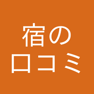

紹介した宿 {{COUNT}}軒（追加した順）
{{CARDS}}
まだありません。「行ってみたい」を押すと、ここに集まります（このスマホの中だけに保存）。

読んで見つけた良いところ
行ったことのない場所に、思いを馳せる。
県ごとに宿のクチコミを読んで3軒を選び、「一人で行くならここ」「だれかと行くならここ」を紹介します。四国の遍路宿は、宿を応援したいので、お客の少ないオフシーズンに。
これまでの県: {{PREFS}}
このページには、楽天アフィリエイトの広告（PR）のリンクがあります。リンクから予約されると、紹介した人に報酬が入ることがあります。
紹介した宿 {{COUNT}}軒（追加した順）
まだありません。「行ってみたい」を押すと、ここに集まります（このスマホの中だけに保存）。